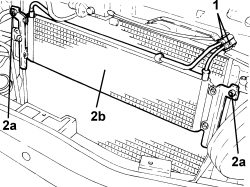

2130A22 COOLING RADIATOR OF AUTOMATIC TRANSMISSION HYDRAULIC CIRCUIT - R + R - INCLUDING FLUID LEVEL TOP UP IF NECESSARY
- Path
- Procedures > 21 GEARBOX UNIT > 2130 AUTOMATIC TRANSMISSION WITH DIFFERENTIAL > 2130A AUTOMATIC TRANSMISSION ASSEMBLY > 2130A22 COOLING RADIATOR OF AUTOMATIC TRANSMISSION HYDRAULIC CIRCUIT - R + R - INCLUDING FLUID LEVEL TOP UP IF NECESSARY
- Kind
- repair procedure (removal / refitting; the operation number is the code)
- Applies to
- engines: 2.4 JTD 20v; all production periods
- Interactive page
- https://sloeber94.github.io/elrnDB-fCrm/en/#/194004012
Applies to: engines: 2.4 JTD 20v; all production periods
 Removing
Removing
 Refitting
Refitting- Position the vehicle on a lift.
- Make sure that the ignition key is in the OFF position, then disconnect the battery terminal (-).
Op. 0010T84 COOLANT FOR AIR CONDITIONING SYSTEM - DEHYDRATE AND REPRESSURIZE
Op. 7040D30 ENGINE BAY FRONT BEAM COVER - R R
Op. 7055B54 UNDER ENGINE PROTECTION/GUARD - R.R.
Op. 5040A40 AIR CONDITIONING CONDENSER - R+R
Op. 1048B50 SUPERCHARGING AIR-AIR HEAT EXCHANGER - R.R.
1. Loosen the collars and disconnect the automatic transmission hydraulic circuit cooling radiator fluid inlet and outlet pipes.
2. Undo bolts (2a) and remove the automatic transmission hydraulic circuit cooling radiator (2b).

Applies to: engines: 2.4 JTD 20v; all production periods
Refitting
Removing- Refit the autoamtic transmission hydraulic circuit cooling radiator in place and secure it using the bolts.
- Connect the collars and disconnect the automatic transmission hydraulic circuit cooling radiator fluid inlet and outlet pipes and tighten the collars.
Op. 1048B50 SUPERCHARGING AIR-AIR HEAT EXCHANGER - R.R.
Op. 5040A40 AIR CONDITIONING CONDENSER - R+R
Op. 7055B54 UNDER ENGINE PROTECTION/GUARD - R.R.
Op. 7040D30 ENGINE BAY FRONT BEAM COVER - R R
Op. 0010T45 AUTOMATIC TRANSMISSION FLUID CHECK LEVEL AND TOP UP IF NECESSARY
Op. 0010T84 COOLANT FOR AIR CONDITIONING SYSTEM - DEHYDRATE AND REPRESSURIZE
- Connect the negative battery terminal.
- Remove the vehicle from the lift.
Topics linked from this page (7)
- 0010T45 AUTOMATIC TRANSMISSION FLUID CHECK LEVEL AND TOP UP IF NECESSARY
- 0010T84 COOLANT FOR AIR CONDITIONING SYSTEM - DEHYDRATE AND REPRESSURIZE
- 1048B50 TURBOCHARGER INTERCOOLER - R + R
- 5040A40 AIR CONDITIONING CONDENSER - R+R
- 7040D30 ENGINE BAY FRONT BEAM COVER - R R
- 7055B54 UNDER ENGINE PROTECTION/GUARD - R.R.
- 7210E10 R.R. FRONT BUMPER